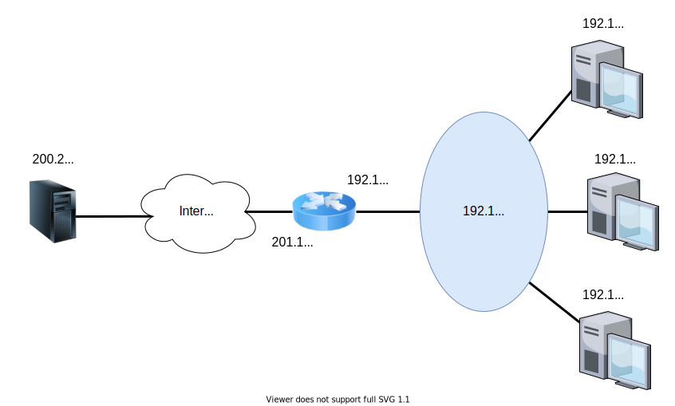

Em aulas anteriores, no contexto dos protocolos IP e DHCP, discutimos como interfaces de rede conectadas à Internet obtêm seus endereços IP. Em última análise, estes endereços são atribuídos pela IANA.
Ocorre, no entanto, que já há vários anos a IANA não possui mais faixas de endereços não reservados1 para alocar para os Registros Regionais de Internet. Na verdade, quatro dos cinco RIRs do mundo também já não possuem mais faixas disponíveis para novas alocações.
Este fenômeno de escassez de endereços IPv4 no mundo não é recente: há mais de duas décadas já se projetava que isso ocorreria. Quando houve a migração do endereçamento baseado em classes para o endereçamento CIDR, o motivo para a projetada escassez de endereços era simplesmente a forma ineficiente de alocação de sub-redes: faixas excessivamente grandes eram alocadas, gerando desperdício. Hoje, no entanto, a razão é bem mais simples: há mais dispositivos que endereços IPv4. A Cisco estima que, em 2017, aproximadamente 8 bilhões de dispositivos computacionais se conectaram à Internet. Este número, 8 bilhões, é claramente maior que o número máximo de endereços IPv4 distintos que se pode atribuir — de fato, é quase o dobro.
Este enorme número de dispositivos conectados à Internet pode parecer, a princípio, um dado inconsistente. Se há apenas cerca de 4 bilhões de possíveis endereços IPv4, como pode haver 8 bilhões de dispositivos se conectando à Internet? Em primeiro lugar, deve-se ter em mente que muitos destes dispositivos não ficam permanentemente conectados, permitindo um reuso de endereços. Em segundo lugar, em qualquer dado momento, há um grande número de interfaces de rede conectadas à Internet que utilizam endereços IP repetidos.
Esta afirmação parece contradizer o que estudamos até aqui nesta disciplina. Implicitamente, estivemos assumindo que endereços IP deveriam ser únicos na Internet. E, de fato, isso é geralmente verdade, mas há algumas exceções — nem tão raras assim — incluindo o tópico destas notas de aula: a técnica NAT.
O NAT (do inglês, Network Address Translation) é uma técnica através da qual um único endereço IP público (também chamado às vezes de endereço roteável) pode ser compartilhado por vários dispositivos computacionais. O termo compartilhado significa aqui que datagramas originados por estes dispositivos computacionais são recebidos por outros dispositivos na Internet pública com o campo de endereço de origem contendo o tal endereço público.
Endereços IP privados — em oposição aos endereços públicos — são aqueles compreendidos nas faixas 10.0.0.0/8, 172.16.0.0/12 e 192.168.0.0/16. Estas faixas são reservadas justamente para que usuários finais possam construir redes IPv4 privadas, com dispositivos que não se comunicam diretamente com o restante da Internet, sem a necessidade de um processo complexo de atribuição de faixas únicas de endereçamento IP. Endereços privados não podem — ou não deveriam — aparecer em tabelas de roteamento de roteadores do núcleo da Internet. Logo, um datagrama destinado a um destes endereços passando pelo núcleo da rede muito provavelmente será descartado por ausência de uma rota adequada.
O fato de uma rede ser privada, no entanto, não impede que seus dispositivos se comuniquem de forma indireta com os demais equipamentos na Internet. Isso, na verdade, acontece o tempo todo na Internet. Considere, por exemplo, um cenário de uma rede doméstica, em que um roteador é instalado na residência para “distribuir” o acesso à Internet a vários dispositivos computacionais, conforme ilustrado na figura abaixo:

Este roteador precisa possuir ao menos duas interfaces de rede: uma interface externa, através da qual ele se conecta ao ISP que provê o serviço de acesso à Internet, e uma interface interna, através da qual o roteador se comunica com os dispositivos dentro da residência.
A interface externa possui um certo endereço IP possivelmente público — nesse exemplo, 201.17.44.67. No entanto, é muito comum que a interface interna esteja conectada a uma sub-rede privada (e.g., 192.168.0.0/24). Se um host pertencente a esta sub-rede privada deseja enviar um datagrama a um servidor web na Internet pública, o roteador de borda da rede privada não pode simplesmente executar um encaminhamento, transmitindo o pacote pelo seu enlace externo: qualquer resposta que o servidor enviasse de volta ao host se perderia no caminho, já que endereços privados não são roteáveis na Internet pública.
A solução proposta pelo NAT é que, antes de realizar o encaminhamento do pacote para a Internet pública, o roteador na borda da sub-rede privada faça uma tradução de endereços. Em outras palavras, este roteador deve substituir o endereço de origem do datagrama — no qual consta o endereço privado do host — pelo seu endereço público. Assim, qualquer resposta gerada pelo servidor seria corretamente encaminhada através da Internet pública de volta até o roteador de borda.
O problema desta abordagem é que, ao receber a resposta vinda do servidor web, o roteador de borda não teria como diferenciar este pacote — que deveria ser entregue ao host privado — de um outro pacote qualquer que, de fato, seja destinado ao próprio roteador. Para permitir esta diferenciação, o NAT precisa armazenar algum tipo estado de cada pacote encaminhado pelo roteador da sub-rede privada para a Internet pública. Com este objetivo, o NAT utiliza uma tabela — comumente chamada de tabela NAT — em que ele anota o número de porta de origem do pacote e endereço IP privado do host que o originou. Ao receber um pacote vindo da Internet, o roteador de borda verifica a porta de destino — porque, em uma resposta, a porta de origem do pacote original se torna a porta de destino — e consulta a sua tabela. Caso algum mapeamento seja encontrado, o roteador entende que se trata de um pacote direcionado a um dos hosts privados. Caso contrário, assume-se que o pacote é destinado, realmente, ao roteador.
No primeiro caso, o roteador desfaz a tradução de endereços: substitui o endereço de destino no cabeçalho IP pelo endereço privado do host, de acordo com a informação encontrada na tabela NAT. Após fazer isso, o roteador continua o processo de encaminhamento, operando sobre o datagrama modificado.
Na prática, há mais alguns detalhes a serem considerados. Em primeiro lugar, os mapeamentos armazenados pelo NAT na sua tabela são usados para conexões ou fluxos de dados, e não para datagramas isolados. Isso significa que, por exemplo, todos os pacotes de uma conexão TCP iniciada por um host privado para um servidor na Internet pública utilizarão o mesmo mapeamento. Quando o primeiro pacote da conexão passa pelo roteador de borda da rede privada, ele consulta a tabela procurando por um mapeamento já existente para aquela conexão. Caso não encontre, é criado um novo mapeamento que, então, será aplicado a todos os demais pacotes daquela conexão. Repare que isso também vale para fluxos de pacotes UDP, ou para qualquer outro possível protocolo de transporte.
Em segundo lugar, o NAT pode também alterar os números de porta — de origem, quando o datagrama deixa a rede privada, ou de destino, quando ele entra — como parte do processo de tradução de endereços. Isso é necessário porque existe a possibilidade de que dois hosts diferentes na rede privada decidam estabelecer conexões com um mesmo número de porta de origem simultaneamente. Neste caso, ao receber um pacote de resposta da Internet pública, o roteador que realiza o NAT precisará discernir a qual conexão — e, portanto, a qual host privado — pertence este pacote. Logo, quando o primeiro pacote de um fluxo passa pelo roteador de borda, o roteador cria um mapeamento incluindo, ao menos, as seguintes três informações:
Porta original. Número de porta conforme conhecido pelo host privado.
IP privado. Endereço IP do host privado.
Porta pública. Novo número de porta atribuído pelo roteador para os pacotes do fluxo correspondente.
Por fim, note que os números de porta do roteador de borda são um recurso importante no NAT: se não houver mais números de porta não utilizados, novas conexões ou fluxos de dados não podem ser criados da rede privada para a Internet pública. Por este motivo, o NAT precisa de algum mecanismo para identificar — ou inferir — que certos mapeamentos podem ser removidos da sua tabela. Para conexões TCP, é comum que o NAT monitore os segmentos de controle — SYN, SYNACK, FIN e FINACK — para descobrir rapidamente quando a conexão é fechada e, portanto, seu mapeamento não é mais necessário. Para fluxos UDP, pode-se usar, por exemplo, um temporizador associado a cada mapeamento: se novos pacotes não utilizarem aquele mapeamento durante um determinado intervalo pré-configurado, o mapeamento é esquecido.
A escassez de endereços IPv4 na Internet é certamente a principal motivação para a utilização do NAT. Houvesse grande oferta de endereços IP, o NAT provavelmente seria abolido, bastando que ISPs recebessem faixas maiores, repassando-as para as redes dos seus clientes.
Entretanto, há algumas outras potenciais vantagens no emprego do NAT. Uma delas é a criação de uma certa independência no gerenciamento dos endereços da rede privada. No caso de uma pequena empresa, por exemplo, que muda de ISP, se cada dispositivo possuísse endereços IP públicos, possivelmente seria necessária a reconfiguração de todos os dispositivos, já que com o novo ISP, provavelmente mudaria a faixa de endereços utilizada pela empresa. Ao utilizar NAT, tal modificação não é necessária, já que basta a alteração do endereço IP público do roteador de borda.
Há também quem argumente que o NAT serve como um mecanismo de segurança, protegendo os equipamentos da rede privada de ataques iniciados na Internet pública. Como os mapeamentos da tabela NAT são criados apenas quando o primeiro pacote de um fluxo sai da rede privada, em geral não é possível que um dispositivo externo inicie uma conexão para dentro da rede privada. Isso força que qualquer conexão seja necessariamente iniciada pelos hosts da rede privada, o que proveria certo grau de segurança adicional.
O NAT é amplamente empregado na Internet atual: redes domésticas quase sempre o utilizam, e ele também é bastante popular em redes institucionais. No entanto, o uso do NAT é bastante controverso.
Uma das questões diz respeito à organização em camadas da Internet. O NAT é uma técnica cross-layer — embora ele atue mais diretamente na camada de rede, ele utiliza, e às vezes modifica, informações da camada de transporte (o NAT, aliás, utiliza o número de porta, um endereço da camada de transporte, como uma extensão do endereço da camada de rede). Mecanismos cross-layer são muitas vezes empregados com o propósito de otimizar certos aspectos do funcionamento de uma rede, mas eles constituem uma violação da organização em camadas do modelo TCP/IP. Uma das possíveis consequências negativas desta violação é a criação de uma dependência entre implementações particulares das camadas: o NAT só é bem sucedido se ele conhecer os protocolos de transporte que estão sendo utilizados. Se criarmos um novo protocolo de transporte que, em particular, coloque os campos de número de porta em locais diferentes do seu cabeçalho, teremos também que modificar as implementações do NAT.
Outro problema do NAT é a impossibilidade de hosts externos iniciarem comunicações com hosts privados. Embora isso tenha sido apresentado como uma potencial vantagem em termos de segurança na seção anterior, esta limitação muitas vezes atrapalha o funcionamento de certas aplicações. Em particular, o NAT geralmente funciona bem para aplicações cliente-servidor — assumindo que o host privado seja o cliente —, mas em aplicações P2P ele se torna problemático, impedindo que certos pares sejam usados como servidores e, com isso, quebrando o balanço entre demanda e oferta tão importante nesta arquitetura.
Por fim, outro argumento contrário ao uso do NAT é o de que sua principal motivação — a escassez de endereços IPv4 — já possui uma solução técnica superior: a adoção do IPv6. O IPv6 é a próxima versão do protocolo IP — sucessora do IPv4 — e será discutida em algum nível de detalhe mais a frente neste curso. Por agora, basta citar que o IPv6 introduz campos de endereço bem maiores que o IPv4, aumentando, em muito, a quantidade de endereços disponíveis.
De toda forma, o NAT é, hoje, uma realidade na Internet. Em parte, isso se deve ao fato desta técnica ser de fácil implantação — ao contrário do IPv6, como veremos adiante. Basta que se configure o roteador de borda para realizar a tradução de endereços, algo relativamente simples. Em teoria, um único roteador de borda, usando um único endereço IP público, daria suporte a mais de 64 mil conexões simultâneas (já que há 216 portas diferentes disponíveis).
Repare, no entanto, que há também desvantagens práticas no uso do NAT. Uma delas é o fato de que, na prática, o número de conexões simultâneas suportadas por um roteador que realiza NAT tende a ser bem menor que as 216 citadas no parágrafo anterior: restrições de memória, por exemplo, comumente limitam o tamanho máximo da tabela NAT bem abaixo deste máximo teórico em implementações reais.
Além disso, o NAT muitas vezes possui uma interação ruim com conexões TCP ociosas. Se um mapeamento na tabela NAT não é utilizado por algum tempo, ele é removido sob a hipótese de que a conexão associada não existe mais. Note que esse é um critério importante mesmo para conexões TCP, já que é possível que, no meio de uma comunicação, os hosts percam conectividade com a rede antes de trocarem os segmentos de fechamento de conexão. Se, por outro lado, a conexão estava apenas sem tráfego durante este período, novos segmentos transmitidos não encontrarão o mapeamento correto ao passarem pelo roteador. Na prática, a conexão, que até então era considerada aberta pelos dois hosts, será quebrada.
Como já explicado em duas ocasiões nesta aula, um dos problemas — ou vantagens, dependendo do ponto de vista — do NAT é a impossibilidade de um host externo iniciar uma comunicação com um host privado. Infelizmente para certas aplicações, este tipo de interação é importante. Por isso, e pela enorme popularidade do NAT hoje em dia, este problema já foi bastante estudado, e as soluções encontradas são genericamente denominadas de técnicas para NAT Traversal.
Uma solução simples para NAT Traversal é a inserção manual de regras estáticas de mapeamento na tabela NAT. Suponha que uma rede doméstica utiliza NAT para compartilhar um único endereço IP público entre vários dispositivos. Suponha que um destes dispositivos execute um servidor web e que desejemos permitir acesso externo (i.e., vindo da Internet pública).
Para que um host externo consiga abrir uma conexão TCP para a porta 80 deste servidor web, inevitavelmente ele terá que gerar um datagrama destinado ao endereço IP público do roteador de borda. Entretanto, quando este datagrama chegar ao roteador de borda, este consultará a sua tabela NAT e precisará encontrar um mapeamento indicando que este datagrama deve ser encaminhado para o endereço privado do servidor web, mantendo-se a porta de destino como sendo a porta 80. Se, previamente, inserirmos uma entrada estática e fixa — i.e., que não expire — com este mapeamento, a comunicação será bem sucedida. Este tipo de solução muitas vezes recebe o nome de encaminhamento de porta, ou port forwarding, em inglês.
A solução de encaminhamento de porta funciona bem para a inclusão de mapeamentos semi-permanentes — i.e., que raramente mudam — na tabela NAT. Neste caso, é razoável assumir que um administrador de rede realize esta configuração manualmente.
No entanto, em certos cenários, aplicações são executadas nos hosts da rede privada de maneira mais dinâmica, potencialmente abrindo sockets para escuta em portas nem sempre previsíveis. Para estes casos, uma solução mais apropriada seria o uso de um protocolo de comunicação que permitisse que um host privado solicitasse dinamicamente ao seu roteador a inclusão de um mapeamento na tabela NAT. Um protocolo que permite isso é o chamado IGD (do inglês, Internet Gateway Device Protocol), empregado, por exemplo, por alguns aplicativos P2P.
Para que esta solução funcione é preciso que tanto a aplicação quanto o roteador suportem o IGD. Aliás, ainda que o roteador dê suporte ao protocolo, é preciso que este suporte esteja habilitado, o que nem sempre é verdade. Por este motivo, uma aplicação deve estar preparada para a possibilidade de que as duas soluções anteriores falhem. Neste caso, outra alternativa relativamente comum na Internet é o uso da técnica de relaying.
Um exemplo de aplicação P2P que utiliza relaying — em último caso — é o Skype. Se dois dispositivos desejam estabelecer uma chamada, mas ambos se encontram atrás de NATs, eles utilizam um outro par da rede que possua um endereço IP público — que pode, inclusive, ser um servidor dedicado a isso — como um intermediário. Ambos os lados da chamada estabelecerão fluxos de dados com o intermediário. Através destes fluxos, cada lado enviará seus pacotes que chegarão à camada de aplicação do intermediário que fará o encaminhamento para o outro lado.
Repare que o encaminhamento citado aqui ocorre na camada de aplicação. O aplicativo Skype rodando no intermediário terá sockets abertos para se comunicar com cada um dos lados da chamada. O que é recebido por um socket, é enviado pelo outro e vice-versa.
Há diversos endereços e sub-redes reservados para propósitos especiais na Internet. Ao longo dessas notas de aula, falaremos de alguns deles. Para uma lista completa, consulte https://www.iana.org/assignments/iana-ipv4-special-registry/iana-ipv4-special-registry.xhtml.↩︎